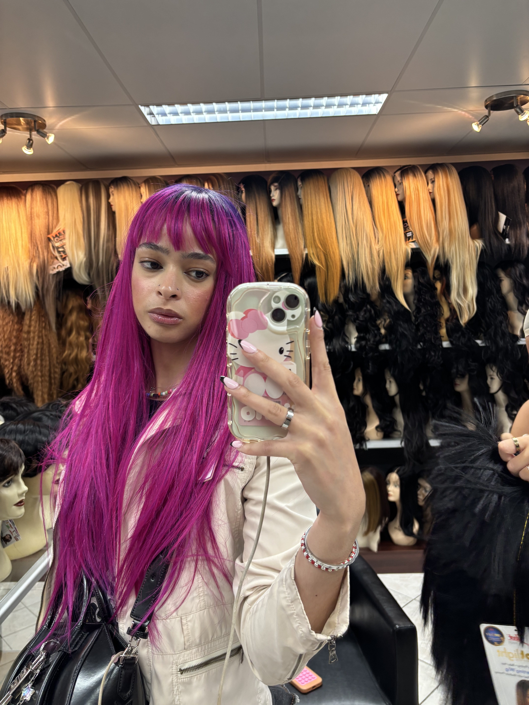
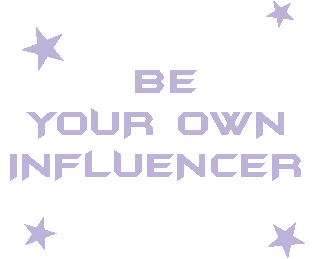

I_S_A_B_E_L_ ♥

"Wees jezelf, dan ben je al leuk genoeg :)"
Vrouw
24 jaar oud
Hoofddorp, Nederland
Laatste login: 26/10/2026
I_S_A_B_E_L_ ♥ haar interesses:
Algemeen: Afspreken met vrienden, naar feestjes en raves gaan, modern art en fotografie musea bezoeken
Sport: Paaldansen, yoga en aerial silks
Muziek: Techno, acid house en popmuziek
Films: Edward Scissorhands
TV series: South Park en Family Guy
Boeken: Girl, Interrupted

BRING BACK MYSPACE
Ooit was het internet een digitale speeltuin. Een plek waar je jezelf kon uitdrukken met glitter-GIFs, muziek en zelfgemaakte websites. Op MySpace draaide alles om individualiteit en creativiteit.
Vandaag worden onze feeds gedomineerd door influencers, schoonheidsidealen en algoritmes. We volgen dezelfde trends en vergelijken onszelf met zorgvuldig samengestelde online levens.
Maar waarom posten we niet dingen die we zelf mooi vinden? Waarom luisteren we naar regeltjes die influencers hebben opgesteld? Dit kan anders!
NEEM JE ALGORITME TERUG.
Jouw feed, jouw regels. Volg mensen die je inspireren, ontdek nieuwe interesses en verberg content die je onzeker maakt. Maak van je algoritme een weerspiegeling van jouw persoonlijkheid.
VOLG INSPIRATIE, NIET PERFECTIE.
Laat je inspireren door anderen, maar blijf trouw aan je eigen smaak. Schoonheid bestaat in allerlei vormen en jouw individualiteit maakt je interessant.
CREËER MEER VOOR JEZELF.
Maak een website, deel je muziek, experimenteer met fotografie of creëer iets totaal nieuws. Doe het omdat jij het leuk vindt, ongeacht hoeveel likes je krijgt.
OMARM JE DIGITALE IDENTITEIT.
Experimenteer met je online identiteit. Wees vreemd, imperfect en origineel. Gebruik het internet om jezelf te ontdekken en je creativiteit te uiten.
MAAK HET INTERNET WEER MENSELIJK.
Steun kleine makers, deel ideeën en maak oprechte connecties. Laten we samen een internet creëren waarin creativiteit en verbinding belangrijker zijn dan populariteit.
BRING BACK MYSPACE IS EEN MINDSET.
We hoeven het oude internet niet letterlijk terug te brengen. We kunnen de vrijheid en creativiteit ervan meenemen naar het heden.
JOUW PROFIEL. JOUW REGELS. JOUW INTERNET.
Make the internet weird again.